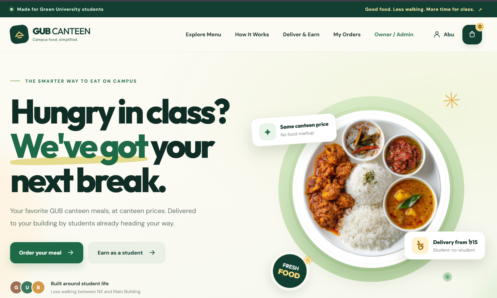
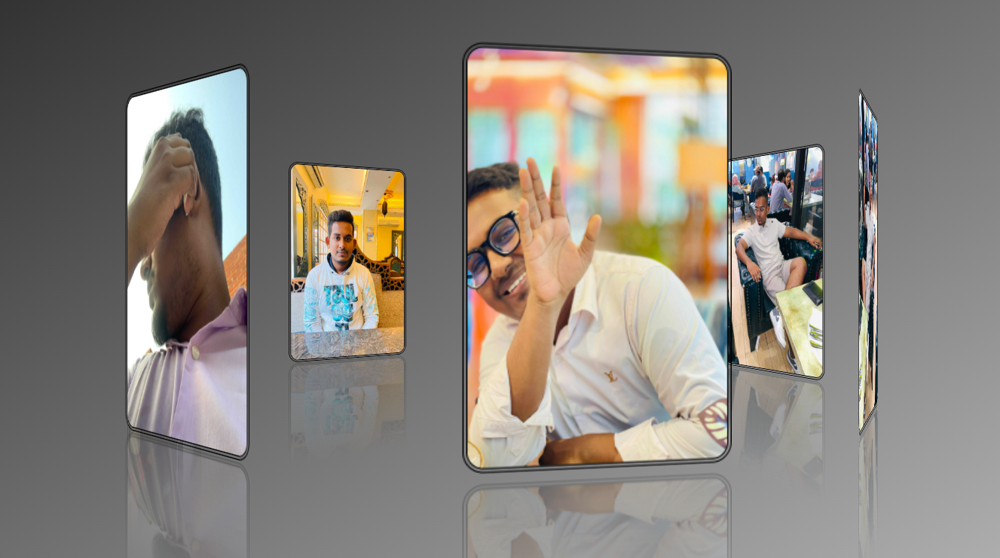
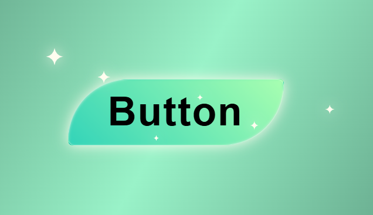

Education
B.Sc. in Computer Science & Engineering (CSE)
Green University of BangladeshCGPA: 2.40CSE Student Software Developer
I build practical software solutions, explore new technologies, and enjoy solving real-world problems through code.
GUB Competitive Programming Club
ABOUT ME
I'm Md Abu Taleb Sadim, a Computer Science & Engineering student at Green University of Bangladesh. I'm passionate about building practical software solutions, solving real-world problems, and continuously learning new technologies. I enjoy turning ideas into efficient, user-focused applications through clean and scalable code.
B.Sc. in Computer Science & Engineering (CSE)
Green University of BangladeshCGPA: 2.40To grow as a Software Developer, contribute to impactful projects, and build technology solutions that create real value.
SKILLS / TECH STACK
Technologies I work with to build efficient, scalable, and user-focused solutions.
SELECTED WORK
Projects that reflect my interest in software development, practical problem-solving, and thoughtful interfaces.
University-oriented smart system for attendance management and examination seat monitoring, including seat-plan verification and alerts for detected issues.

A full-stack web application project designed around a university canteen experience.

Seven images rotate in a perspective-based 3D carousel. Hover to pause the motion and explore the visuals.
Status: Completed (2025) · Role: Frontend Developer
Tools: HTML5, CSS3, CSS Keyframe Animations, CSS 3D Transforms, CSS Transitions.
Features: Automatic seven-image rotation, circular 3D layout, pause on hover, perspective, reflections, image hover transitions, and gradient styling. Implemented without JavaScript.
Contribution: Built the image positioning system, 3D animation, hover interactions, and visual styling.

A glassmorphic button built with pure HTML and CSS, featuring six SVG sparkles and glowing hover transitions.
Status: Completed (2025) · Role: Frontend UI Developer
Tools: HTML5, CSS3, SVG Graphics, CSS Transitions, Pseudo-elements, and Hover Animations.
Features: Six animated SVG stars, glowing hover effects, glassmorphism, colorful gradients, smooth transitions, and custom CSS pseudo-elements.
Contribution: Created the button structure, SVG sparkle positioning, hover effects, and visual transitions without JavaScript or external animation libraries.
MY JOURNEY
Learning through responsibility, teamwork, and active participation in university activities.
Supporting club initiatives, activities, coordination and student engagement.
Campus leadershipContributed to organizing activities and coordinating club initiatives.
Campus leadershipCompleted a leadership training program and received a certificate.
Professional developmentGET IN TOUCH
DRAG TO ROTATE ⟷